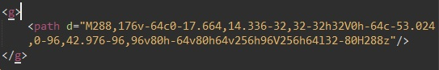
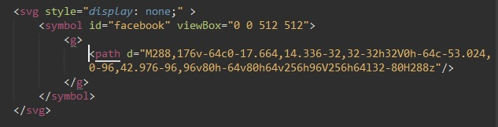
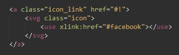
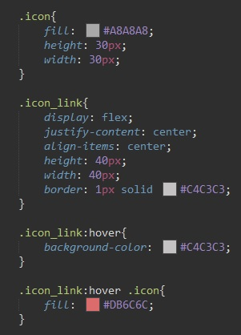

Изображения в формате svg можно скачать на сайте flaticon.com
Почему лучше использовать изображения в формате svg? потому что изображения формата svg являются векторными, и при любом масштабировании они не теряют качество.
После открываем изображение через sublimetext и нам необходимо скопировать код картинки который заключен в тег: "g"
Теперь переходим в наш файл html после открывающегося тега body создаем тег svg. добавляем ему атрибут style и задаем свойство "display: none" что бы наши иконки именно тут не отображались. Внутри тега svg мы помещаем тег symbol и задаем этому тегу id. по этому id мы будем вызывать нашу иконку.
Внутрь тега symbol мы копируем код который мы скопировали из файла svg (тот что в теге "g"). Посел чего надо из файла svg скопировать свойство viewBox и вставить его атрибутом в тег symbol. в итоге все выглядит вот так:
Теперь как нам вызывать нашу картинку?
вызываем тег svg внутри него помещаем тег use и атрибутом в него вставляем: xlink:href="". в кавычках мы указываем селектор который указывал в теге symbol (id)
Как нам теперь стлизовать нашу картинку? тегу svg мы можем задать класс и в CSS задавать стили этому классу.
Для указания цвета заливки изображения используется такое свойство как: fill: #f3f3f3;
Стилизация примера:
